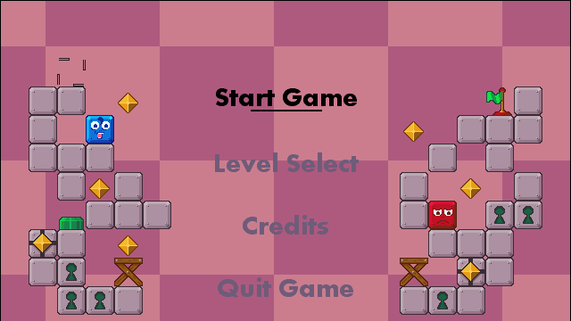
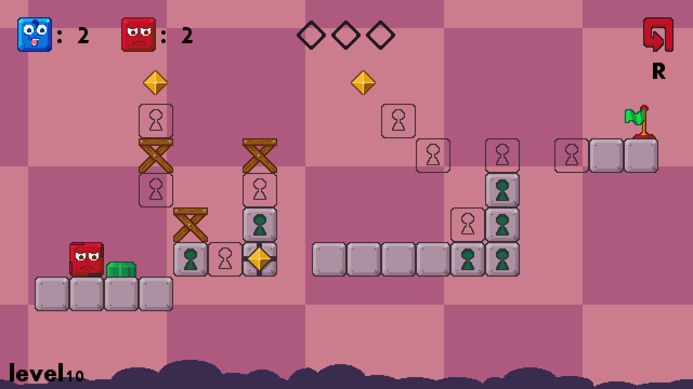
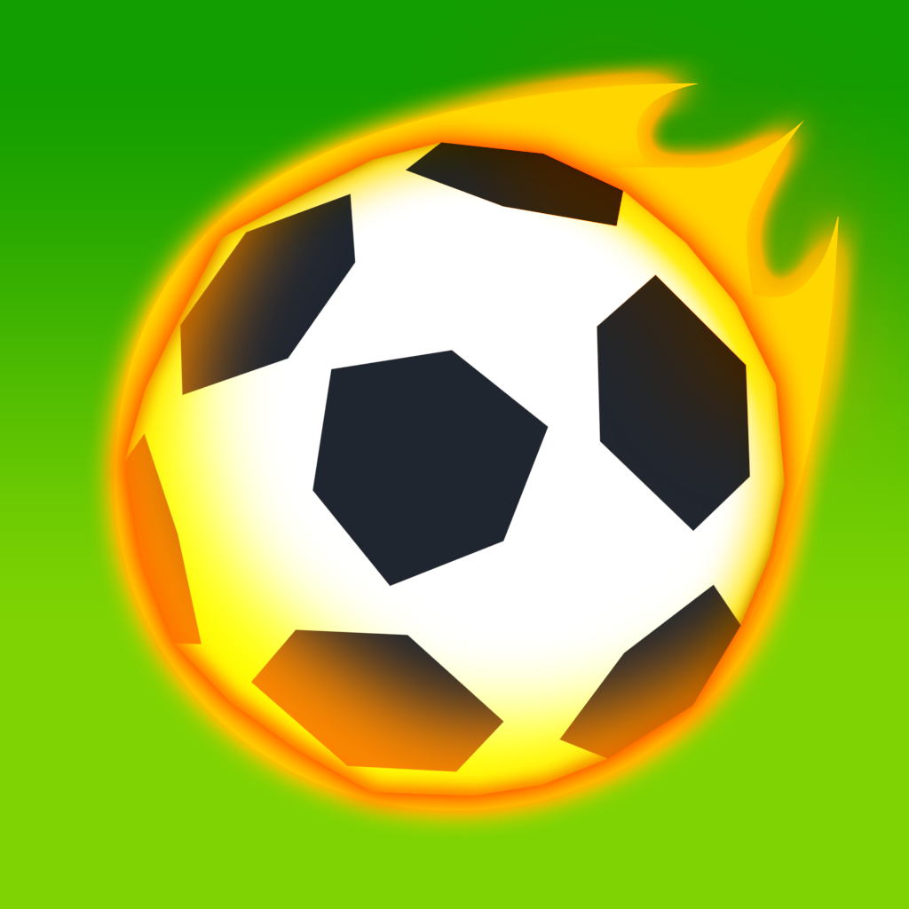
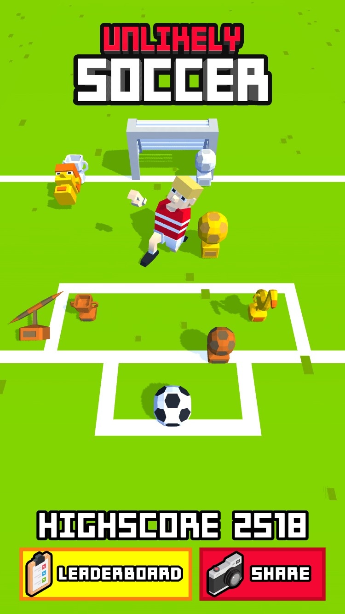
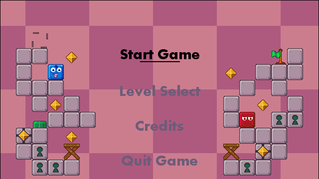
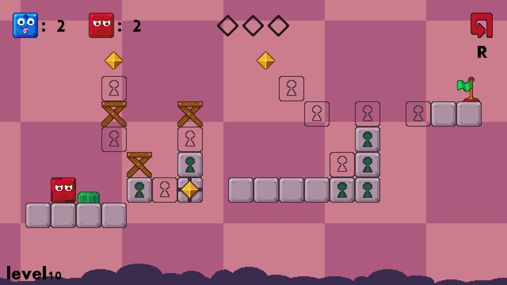
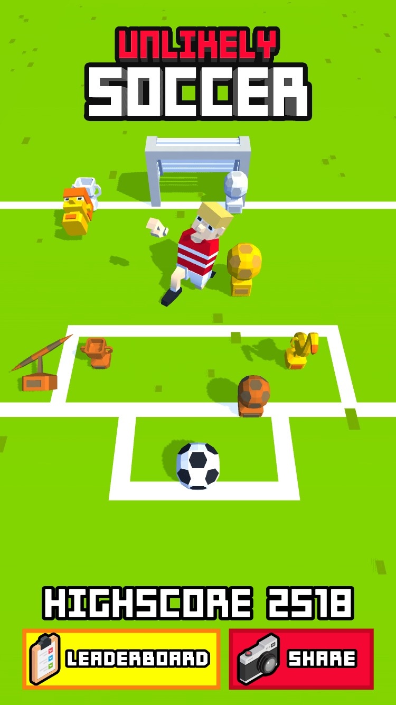

Udvalgte Projekter
Blocklings
Mit nuværende soloprojekt der vandt mig titlen som danmarksmester i spiludvikling.
 Unlikely Soccer
Endless runner-spil ude nu til IOS. Udviklet for Northplay.
Min passion er spiludvikling, og jeg arbejder hårdt på at blive proffesionel spildesigner. Jeg har et stuidejob hvor jeg designer og programmerer små mobilspil hos et firma der hedder Northplay. Jeg har arbejdet med spil på hobbyplan i årevis og vundet diverse små konkurrencer indenfor det, heriblandt danmarksmesterskabet i spiludvikling 2018.
Game Developer Intern hos Northplay Aps. sep 2018 - Nu
Game Designer og Co-founder af Wacky Wizards Entertainent I/S. mar 2018 - sep 2018
Game College HTX Grenå. 2015-2018
Mit nuværende soloprojekt der vandt mig titlen som danmarksmester i spiludvikling.
 Endless runner-spil ude nu til IOS. Udviklet for Northplay.
